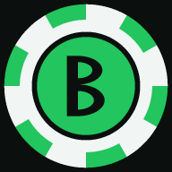
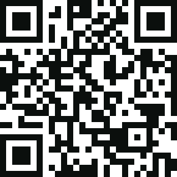

BoteHome poker, settled.
How many chips to hand each player, every rebuy tracked, and at the end of the night who pays whom, with the fewest payments. Free, no account, works offline.
Free & open source · web app, nothing to download · iPhone and Android · app in Spanish
Made for your phone

Scan it, then Share → Add to Home Screen. It opens like an app and keeps working with no signal at the table.
How many chips do I give everyone?
You type: 4 players and what's in the box
Bote answers: €40 each
It works like making change with coins: it tries every combination and finds the one that adds up exactly, with plenty of low chips for the blinds. Leave the buy-in empty and it picks the biggest round one your box allows.
What it does
Colours, values and what's in the box in; exactly how many of each to deal out.
Buy-ins log themselves. Rebuys and cash paid mid-game are one tap each.
Logged as a transfer, not a buy-in, so the totals always add up.
At the end, count each stack by colour and Bote does the maths.
Who pays whom, in at most N−1 payments for N players. Share it to the group chat.
No account, no server. Games and history stay on your phone.
Start in a minute
- Open bote.nachosanbenito.com in Safari (or Chrome on Android).
- Tap Share → Add to Home Screen. From then on it opens like an app, even offline.
- Tap ¿Cuántas fichas doy a cada uno? (how many chips each), then Nueva partida (new game). The app speaks Spanish for now.